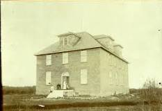

Red Deer Hospital
The Red Deer Hospital was built in 1904 as a memorial to three local men who died in the Boer (South African) War while serving with Lord Strathcona's Horse regiment. Numerous donations were gathered to aid in the construction including a large gift from Lord Strathcona himself.
Construction commenced on the hospital in the spring of 1903 but the Board of Directors ran out of money and the Town Council had to provide assistance. The new building was completed in spring 1904 at a cost of $12,000.
The new hospital had 11 private wards and two public wards, able to accommodate twenty-three patients. There was a reception room, a spacious operating room with surgery and a large kitchen. The attic could also be used for dormitories.
Back to Top